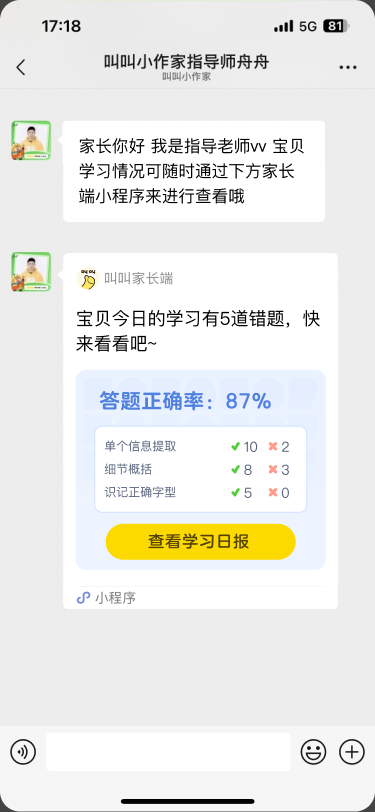
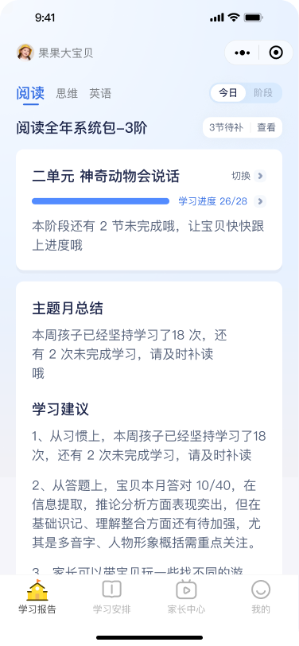

叫叫 · 家长成长沟通 Demo
每日 · 学习即时反馈
今天完成的学习，今天被看见。

第一步
班班把孩子今天的学习情况发给家长
这张页面为 Figma 原始页面截图。点击下一步，继续查看孩子的学习报告。

第二步
打开报告，看见具体的学习结果
家长进入小程序，在真实报告页面中了解孩子的学习进度与下一步建议。
每日 · 学习即时反馈

这张页面为 Figma 原始页面截图。点击下一步，继续查看孩子的学习报告。

家长进入小程序，在真实报告页面中了解孩子的学习进度与下一步建议。